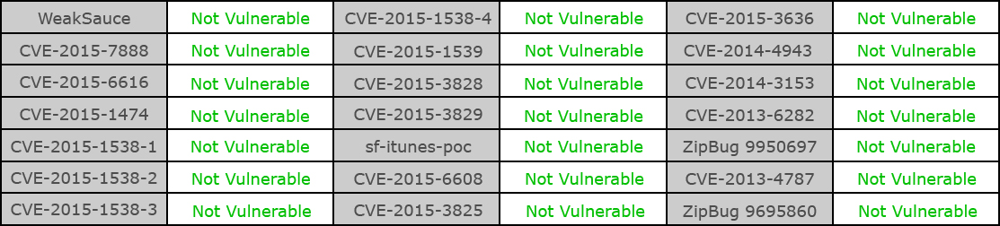

FAQ
Q: タッブレット起動時のパスワードロックおよびスクリーンの自動ロックを解除する方法は？
A: タブレット起動時のパスワードロック設定を解除するには、システムを初期化する必要があります。ただし、タブレット内の全てのデータが消去されますので、先にデータのバックアップを行うことをお勧めします。電源スイッチを押してタブレットを起動後、ホーム画面から【設定】→【バックアップとリセット】→【データの初期化】の順にタップして、《データの初期化》画面で【タブレットをリセット】をタップします。
Q: KALOS 2をコンピュータにフラッシュメモリとして接続し（フラッシュメモリモード）、データを保存することができますか？
A: はい、できます。製品に付属するUSB Type Cケーブル（microUSB to USB Type Cケーブル）及び一般のマイクロUSB Type Cケーブルを使用し、このケーブルのUSB Type Cプラグをコンピュータのmicro USBコネクタに接続します。コンピュータのファイルマネージャで、KALOS 2タブレットに直接データを保存できます。（ドライバーをインストールする必要はありません。）
Q: フラッシュメモリモードはMac OSに対応していますか。
A: 申し訳ありませんが、KALOS 2のフラッシュメモリモードは、Windowsシステムのみサポートとなっています。なお、Windows XPシステムをご使用の場合、ドライバソフトウェアの更新ができるようにするため、先にMedia Playerがバージョン11に更新済みであることを確認してください
Q: KALOS 2のGPSが信号を受信しているかどうかを検出する方法を教えてください。
A: Google Playからキーワード「GPS Test」で検索を行い、無料のアプリを利用してGPSの衛星信号の受信状態を確認することを推奨致します。（注意： KALOS 2のGPSは市販のGPSと同様に、室内または電波を遮蔽する物がある場所で使用すると、GPS衛星信号の受信に影響があります。）
Q: KALOS 2に対応する衛星信号のについて？
A: KALOS 2 はアメリカのGPSシステム Global Positioning System)とロシアのGlonassシステム(GLObal NAvigation Satellite System)に対応しておりますが、中華人民共和国の北斗衛星(BDS)には対応しておりません。
Q: KALOS 2が対応する周波数、チャンネルについて？
A:KALOS 2は以下の周波数帯域、チャンネルに対応しています。2.4G(b/g/n)：1, 2, 3, 4, 5, 6, 7, 8, 9, 10, 11ch5G(a/ac)：B1：36, 40, 44, 48chB4(5.725-5.825G)：149, 153, 157, 161, 165ch
Q: 購入したKALOS 2に問題が発生した場合、どこで修理できますか。
A: ネットショップを通じてお買い上げの場合、まず当社のカスタマーサービスに電話：0120-160-067（フリーダイアル：日本国内から場合）、またはsupport@bungbungame.com宛てにご連絡ください。
Q: KALOS2でスクリーンショットを撮ることはできますか？
A: スクリーンショットを撮る方法は2つあります。1. 電源キーと音量下キーを同時に2秒程度長押しすると、表示されている画面のスクリーンショットを撮影できます。（撮影したスクリーンショットは、【アルバム】→【スクリーンショット】フォルダに保存されます）。2. 電源キーを2秒程度長押すと、画面に【スクリーンショット】のアイコンが表示されます。【スクリーンショット】の文字をタップするとスクリーンショットが撮影されます。
Q: KALOS 2の1年間保証は何を根拠として判断しますか。
A: お客様のお買い上げ時の年月日を証明できる、レシート・領収書の日付または製品シリアル番号で判断いたします。これらのうちいずれか遅いほうの日付から1年を起算します。このため、お買い上げ時のレシート・領収書は必ず大切に保管してください。なお、レシート等のコピーでも代用できますが、紛失した場合は、製品シリアル番号にて判断いたします。※但し、SDカードスロットは保証対象外となりますのでご了承ください。
Q: KALOS 2の4G LTE版を発売する予定はありますか。
A: KALOS 2は現在WIFI版のみの発売となっています。
Q: KALOS 2に付属のUSB Type-Cケーブルは他機種のタブレットＰＣで使用することはできますか？
A: KALOS 2に付属のUSB Type-Cケーブルは標準仕様のものです。他の設備にも使用できますが、使用方法については該当設備の取扱説明書をご参照ください。
Q: K2に対応ACアダプタ情報
A: KALOS 2はACアダプタを同梱しておりませんので、市販で適切なものを別途お買い求めくださいACアダプタの仕様：AC-USB, 5V/2.4A; 9V/1.8A; 12V/1.5A (100-240V)
Q：現在、Android端末におけるセキュリティ上の弱点（脆弱性）を補強しましたか？
A：Android VTS v13バージョン（2015.12.15）に対するテスト結果は下記の通りです。 